Every leisure centre runs on a rota, and almost every rota runs on a tired spreadsheet and a long email chain. A swimming pool is a tricky case: swim teachers and lifeguards need slotting into half-hour poolside sessions, lifeguards must hold in-date training, and somebody has to approve it all and chase the gaps.
I wanted to see how far I could get building a proper replacement — not a prototype, a deployable app — with Claude Code as my pair programmer. It started life as a build for one specific leisure-centre pool, then got generalised into Staff Pool Rota: a mobile-first Progressive Web App that staff install on their phones, request shifts from, and message each other in, that admins run the whole rota from — and which now runs live on a public domain behind Cloudflare.
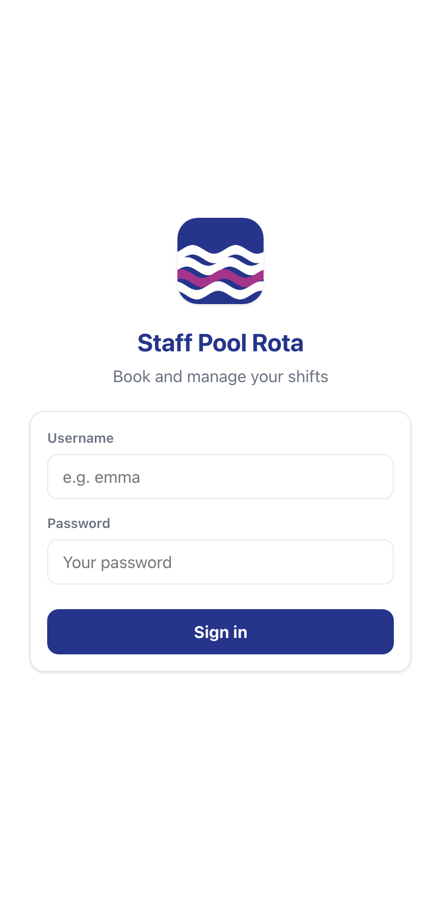
01The brief
The requirements were unglamorous and very real:
- Two kinds of staff — teachers and lifeguards (plus assistant teachers), each with different qualifications.
- Half-hour shifts across a pool open from early morning to late evening, with constant lifeguard cover and different classes each evening.
- Self-service: staff request the slots they want; an admin approves.
- Training rules: a lifeguard whose qualification has expired is automatically blocked from lifeguard shifts.
- It has to live on a phone. Poolside staff won’t log into a desktop portal.
That last point pushed the whole design towards a mobile-first PWA: installable to a home screen, works offline, feels like a native app.
02The stack — deliberately boring
I asked Claude Code to keep the technology minimal, and it held that line throughout:
- Backend: FastAPI + SQLite, with authentication written against the Python standard library only (PBKDF2 hashing, HMAC-signed tokens).
- Frontend: vanilla JavaScript — a single-page app with no build step, no bundler, no framework.
- Delivery: Docker + Caddy (automatic HTTPS), deployable to a small cloud server with one command.
The whole app is around 5,300 lines. No node_modules, nothing to compile. You can read it end to end in an afternoon — which, for a tool one person will maintain, is exactly the point. Claude Code is genuinely good at resisting the urge to reach for a framework when plain code will do, if you tell it to.
03What the workflow actually felt like
A CLAUDE.md as the project’s memory. Early on I had Claude Code write a project guide — how to run and deploy it, the data model, the conventions, the gotchas. Every later session started by reading that file, so I never re-explained the architecture.
Tight, iterative loops. Most commits are small and specific — “show inline clash warning in approvals”, “part-cover amber, Week tab first”. I’d describe a behaviour or a tweak; Claude Code changed it across the backend and the 2,700-line frontend in one pass; I checked it in the browser. The commit log reads like a conversation.
Deploy as a habit. Push, and it redeploys to the live server. “Make a change, see it live” was a 30-second loop — which completely changes how willing you are to polish.
04The build, day by day
Day 1 — Scaffold
The whole skeleton: the SQLite schema, stdlib auth, the engine that materialises bookable half-hour shifts from recurring weekly templates, a realistic data seeder, and the PWA shell. By the end of day one there was a working login and a calendar.
Day 2 — Classes & conversation
A proper class-schedule system (each swimming level gets its own weekly schedule and default staffing), and — the day’s surprise — a full team-messaging system with channels, direct messages, unread badges, all delivered in real time.
Day 3 — The admin side grows up
A compact approvals queue, the first reports, a day view, and a redesigned “My Shifts” as a tight week grid of status chips.
Day 4 — The polish marathon
More than half the commits land on a single day: the interactive coverage timetable, the bulk rota builder, inline clash warnings, training-expiry enforcement, role shortcodes, an activity log, a configurable timezone, and a locked “All Staff” channel. This is where it went from functional to polished.
05A tour of where it landed
When a teacher or lifeguard opens the app they get a personal dashboard: this week’s shifts at a glance, a count of what’s coming up versus what’s still open to grab, and — if relevant — a nudge that their training is about to expire.
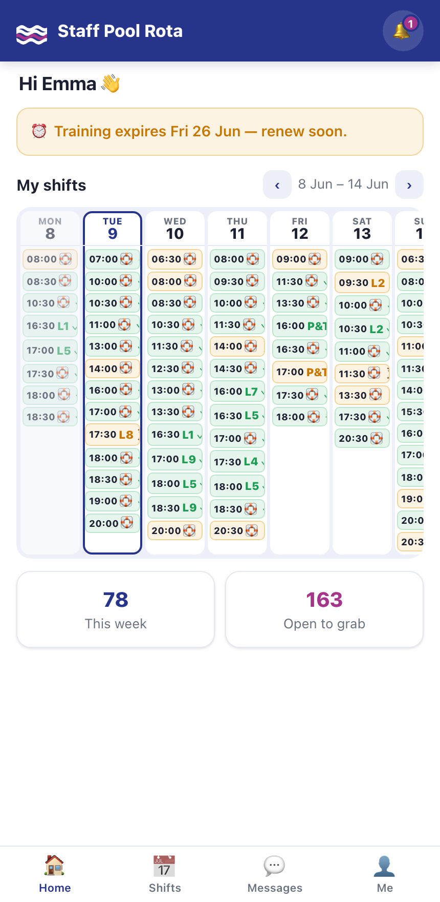
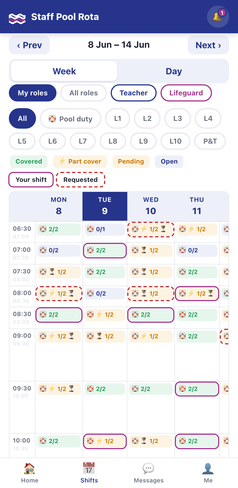
Self-service only works if people aren’t tripping over each other, so the timetable is honest about contention: tap a slot someone has already requested and it tells you exactly who’s waiting on it.
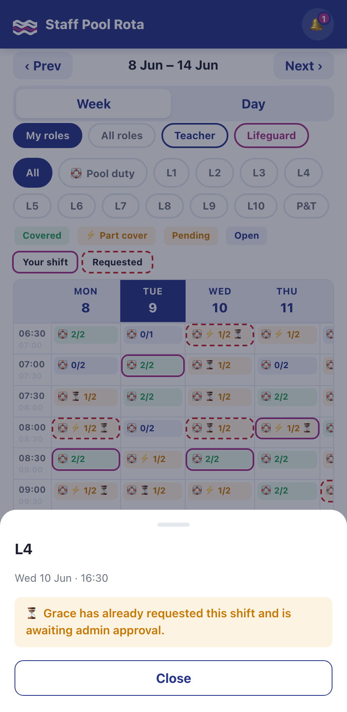
Admins get a four-tab control centre — approvals, reports, staff management, and the rota builder.
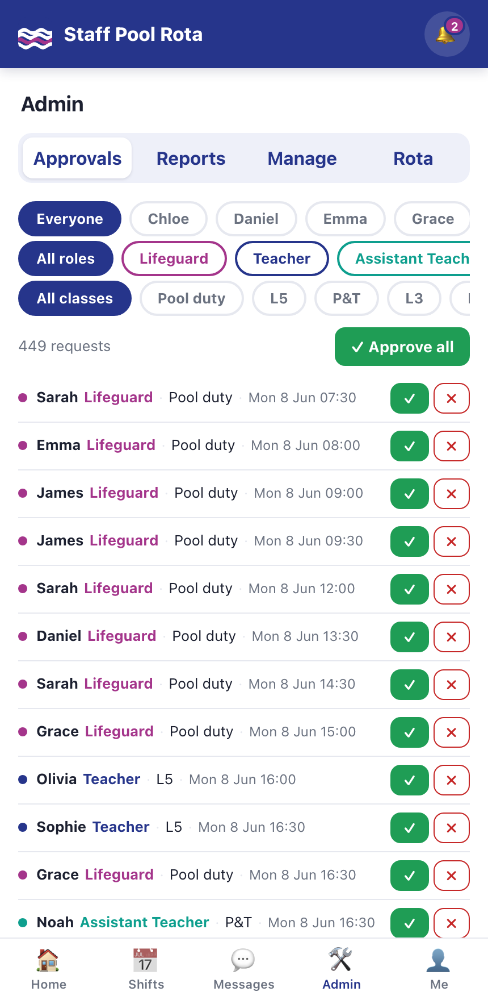
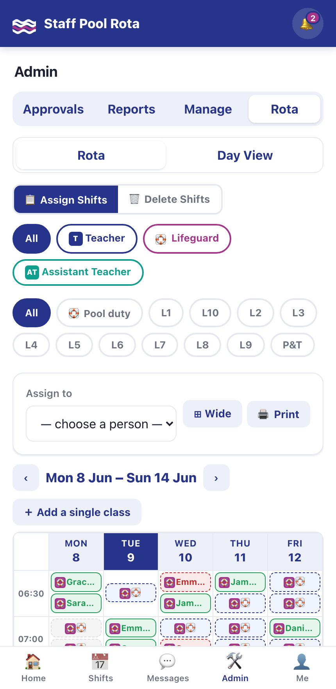
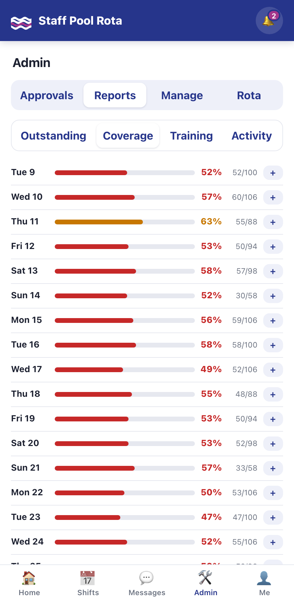
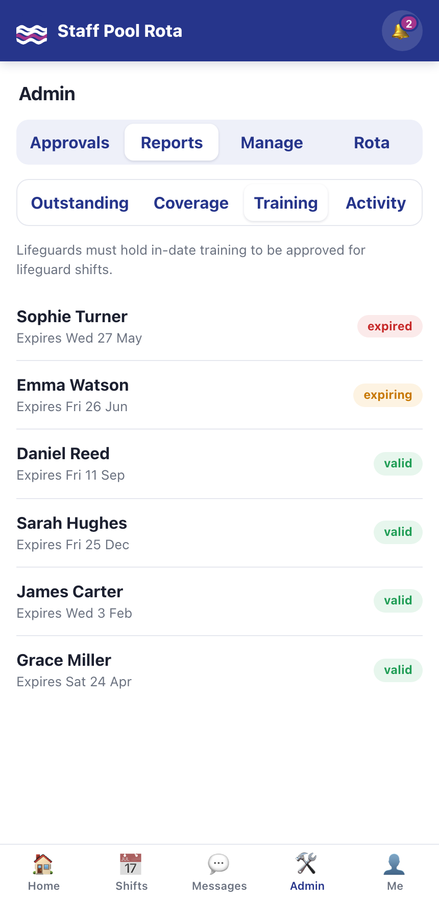
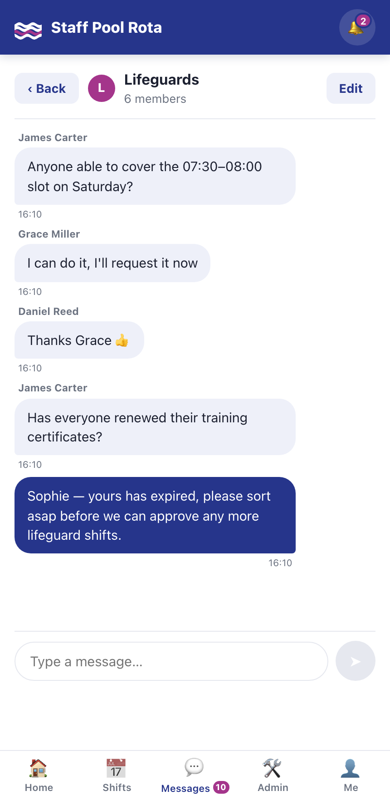
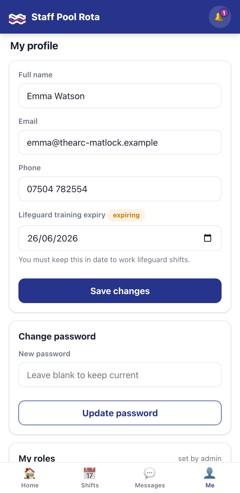
A rota you can only ever add to gets unwieldy fast, so a later round added the other half: a Delete-Shifts mode. Flip the toggle and the same grid becomes an eraser — only open (unassigned) shifts are selectable, you batch-select them, and a confirmation step removes them. Under the hood they're soft-deleted (the row is kept and hidden) so the weekly generator doesn't just recreate them on its next pass. Admins can also tweak the weekly class schedule and drop a one-off class straight onto the grid.
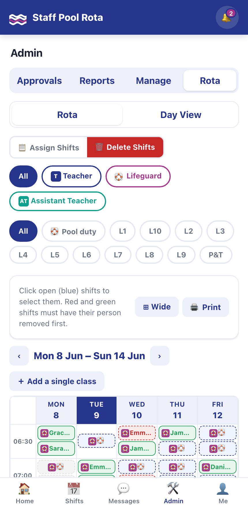
06Where Claude Code shone — and where I steered
It shone at breadth. A single instruction could touch the data layer, an API endpoint and several render functions at once and come back coherent. Holding a 2,700-line vanilla-JS SPA and a FastAPI backend in view at the same time is exactly the context-juggling that’s tedious for a human and natural for the model.
It shone at the unglamorous 80%. Docker, the Caddy config, the deploy script, the seeder, the service worker, the docs — all the scaffolding that makes something deployable rather than just runnable.
I steered on judgement calls. The colour language of the timetable took several rounds — what “part cover” should look like, solid vs dashed outlines, which tab comes first. Those are taste, and the right move was lots of small iterations.
“It works when I click it” and “it’s correct when fifty people use it at once” are different bars — and the model won’t reach the second one unless you ask it to.
07Making it production-ready
Once it worked, I had the whole thing audited. The most important finding was a classic concurrency bug: two staff requesting the same open slot at the same instant could both be told they’d got it — a race that never shows up in casual testing and becomes likely exactly when the rota opens and everyone piles in.
FIXED The double-claim race
The booking code read a slot’s status and then wrote, without holding a lock. The fix was small but surgical: every claim now runs inside an “immediate” database transaction with a status-guarded conditional update, so simultaneous claims serialise and the loser gets a clear “just taken” message instead of a false success. It’s covered by an automated test that fires six parallel requests at one slot and proves exactly one wins.
With that closed, I worked through the rest of the audit’s hardening list: login rate-limiting to blunt brute-force attempts; timezone-correct dates so “today” is the club’s local day, not the server’s UTC; input validation that returns tidy errors instead of 500s; security headers (HSTS, CSP, clickjacking protection); and a forced password change so no admin can keep running on a default password.
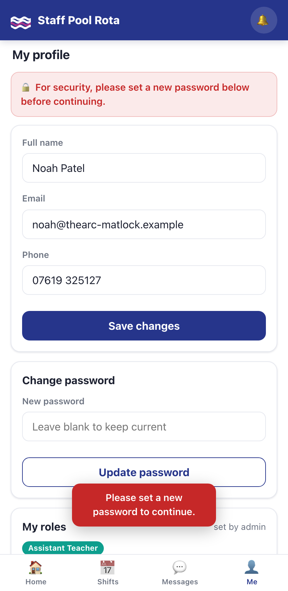
Going live
The final step was a real home. The app now runs on a public domain behind Cloudflare, with a Cloudflare Origin Certificate so the edge-to-server hop is encrypted too (Cloudflare’s “Full (strict)” mode) and the security headers above doing their job over real HTTPS — which is also what lets staff “install” the PWA to a phone home screen. Deploys stay a one-liner: push to GitHub, then a single SSH command rebuilds the container and restarts.
And the auditing never really stops. Every new feature gets re-checked — when the Delete-Shifts feature went in, the follow-up review was about making sure a “deleted” shift truly disappears everywhere (reports and counts included), not just from the calendar. That ongoing “but what about…” pass is, honestly, where a lot of the real quality comes from.
08So — is it production-ready?
For its actual job — one pool, a few dozen staff, a handful online at once — it’s live and ready. The architecture is clean, the security fundamentals are in place, and the feature set is genuinely complete.
✓ Solid
- Hashed passwords, parameterised queries, escaped output
- Concurrency-safe booking, with tests
- One-command deploy, HTTPS, backups documented
- Complete, real feature set
↗ Next, if it grows
- A shared message broker for multi-server scale
- Postgres if it ever serves many pools
- Email/push reminders for shifts & expiring training
SQLite and a single server are the right call here, not a compromise — and there’s a clear path to a bigger product if it’s ever needed. But that’s a next-product problem, not today’s.
09The takeaway
A first working version in four days, sixty-plus commits and counting, one collaborator that never tired of an “actually, can we make the amber a little less aggressive” request. Claude Code didn’t just autocomplete functions — it scaffolded the project, carried the architecture across dozens of sessions, wrote the deploy pipeline, generalised the whole thing from one pool into a reusable product, and helped harden and ship it to a live domain.
The lesson isn’t “AI writes the code for you.” It’s that the bottleneck moves. With the typing and boilerplate handled, what’s left is the part that was always the actual job: deciding what to build, having the taste to know when it’s right, and the discipline to ask “but is it correct when everyone uses it at once?”
That, it turns out, is a pretty good division of labour.